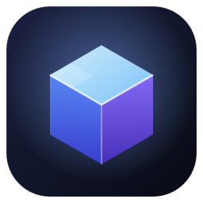
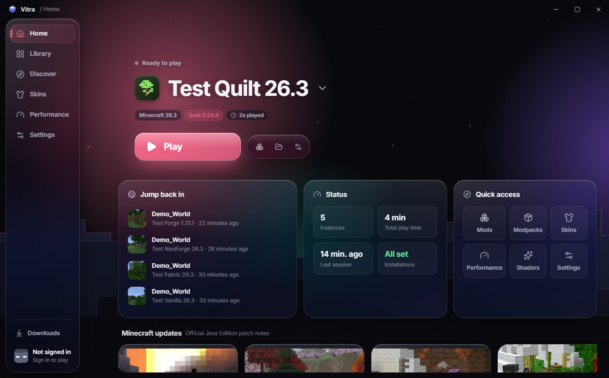
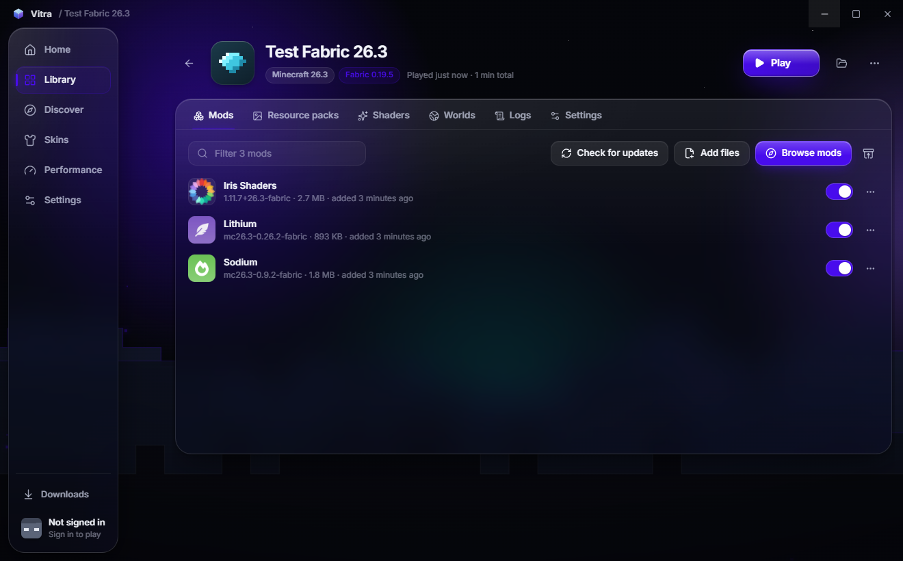
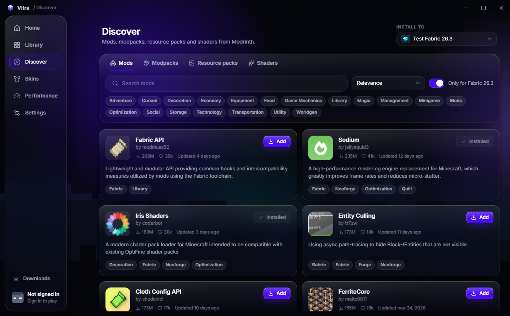

Vitra Launcher
A desktop launcher for Minecraft: Java Edition
Vitra is a personal, non-commercial launcher for Windows, built with Tauri (Rust) and React. It installs and launches Minecraft: Java Edition, manages separate game instances, and installs mods, modpacks, resource packs and shaders from Modrinth.

What it does
- Installs official game files from Mojang's servers and checks every file against its published checksum.
- Supports vanilla Minecraft and the Fabric, Quilt, Forge and NeoForge mod loaders.
- Downloads the Java runtime Mojang specifies for each Minecraft version.
- Browses and installs content from Modrinth, resolving required dependencies.
- Lets players preview skins in 3D and change their own skin and cape.


Microsoft account sign-in
Vitra uses the official Microsoft sign-in so players can launch the copy of Minecraft they own:
- Microsoft OAuth device code flow (scope
XboxLive.signin offline_access). The player signs in on Microsoft's own website. - Xbox Live user authentication, then XSTS for
rp://api.minecraftservices.com/. /authentication/login_with_xboxto get a Minecraft access token./entitlements/mcstoreand/minecraft/profileto check ownership and read the player's name and UUID.- The profile skin and cape endpoints, only when the player chooses to change their own skin or cape.
Privacy and security
- Vitra never sees, asks for or stores the player's Microsoft password.
- Sign-in tokens stay on the player's own computer, encrypted with a key kept in the Windows Credential Manager.
- No account data is sent anywhere except Microsoft's and Mojang's own services.
- Players who don't own the game can only start the official demo.